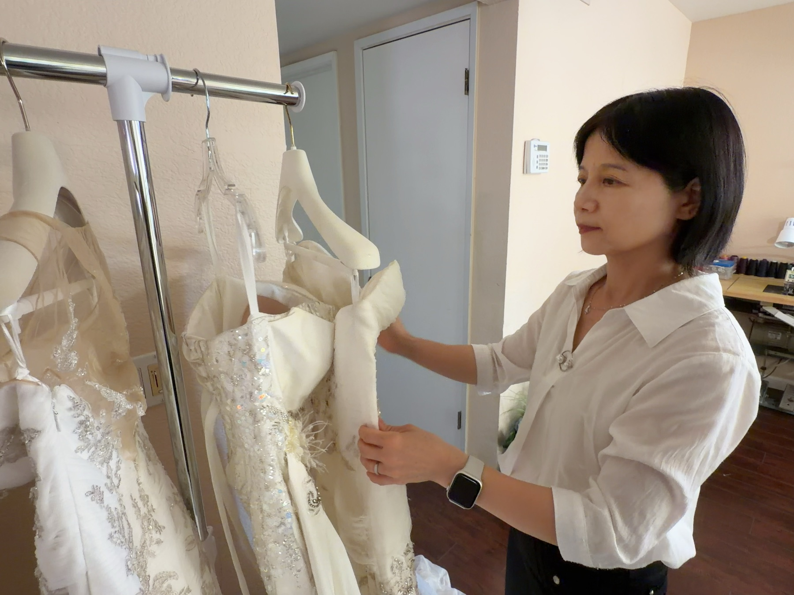

Know your proportions, not your size
Silhouettes respond to proportions (bust, waist, hips, height), not the number on a tag. Decide which features you want to celebrate and which to soften, and the right shapes choose themselves.

The Silhouette Guide
Ball gown, A-line, mermaid, sheath… each shape flatters a different figure. After forty years of fittings, here is how to match the gown's shape to yours, before a single stitch is sewn.
Silhouettes respond to proportions (bust, waist, hips, height), not the number on a tag. Decide which features you want to celebrate and which to soften, and the right shapes choose themselves.
Every "rule" below has been broken by the right dress. Alterations can move where a gown's fit lives: shaping a bodice, easing a hip, resetting a waistline. That part is our job.
Ask anyone in bridal: the dress a bride falls for is so often the one she didn't plan on. Our free preview videos let you see yourself in a wildcard silhouette before anything is made.
Find Your Shape
Every wedding gown hangs on one of a handful of underlying shapes. Here is each one, who it was made for, and when to think twice, from a seamstress who has fitted them all.
The fitted bodice and full, sweeping skirt balance a fuller bust beautifully, especially on slim-hipped figures. This is the classic fairytale-bride look, widely considered the most romantic silhouette of all.
Think twice ifAll that volume below can make a smaller bust look smaller still. Petite brides risk disappearing into the skirt. And if your hips are your widest point, the skirt springs open from exactly there and can exaggerate them.
A bodice that hugs the natural waist, opening into a clean, gentle flare. It flatters a slim waistline, makes the most of the bust, and the skirt skims cleanly over wider hips. The most forgiving all-rounder in bridal.
Think twice ifThe fitted bodice is honest: it draws the eye toward a smaller bust, and brides with a fuller figure may prefer a shape that doesn't follow the body quite so closely through the torso.
Cut on the bias so the cloth drapes with the body, the sheath is slim, fluid and effortlessly chic. It flatters tall brides and petite ones alike. This is the dress for a figure you love and want the world to see.
Think twice ifIt follows every line of the hips, so if you are fuller there, this shape will show it. A perfect curvy figure it will celebrate, but curves you'd rather not spotlight will show too.
Fitted from the bust all the way to the knee, then flaring in a dramatic sweep. No silhouette celebrates curves with more confidence: stylish, sexy, and full of poise. This is bridal's red-carpet shape.
Think twice ifLike the sheath, it holds the hips closely, so it is rarely the first choice for wider hips. And it must be fitted with enough ease to actually sit and dance. That is exactly the kind of shaping an experienced seamstress is for.
Fitted through the bust, waist and hips, then releasing into a soft flare from mid-thigh, the trumpet is the mermaid's easier-going sister. It celebrates curves while leaving real room to walk, sit and dance, and it suits most heights.
Think twice ifThe flare begins right at the hip line, so the eye goes exactly there. If the hips are what you'd rather soften, an A-line will skim far more kindly.
Our custom-gown consultation is free: share your measurements and your venue, and we'll recommend the silhouettes that flatter you most, and even preview you wearing them before anything is made.